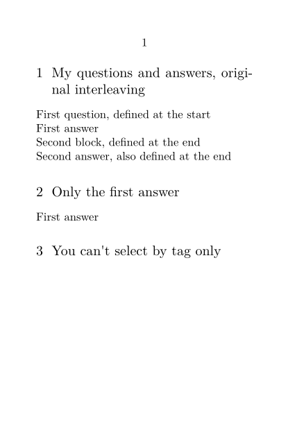
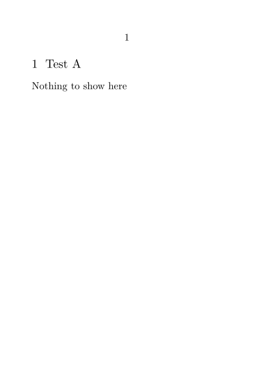

Contents
Summary
The command
\useblocks
is used to typeset blocks
Settings
Description
Typesets all the requested blocks defined in the document, in the order in which they were defined. An optional second argument can be used to print only blocks with certain tags.
Examples
Example 1
-
\setuppapersize[A7] \defineblock[myquestion] \defineblock[myanswer] % We don't want to display blocks when we define them. \hideblocks[myquestion,myanswer] \starttext \beginmyquestion[first] First question, defined at the start \endmyquestion \beginmyanswer[first] First answer \endmyanswer \subsection{My questions and answers, original interleaving} \useblocks[myquestion,myanswer] \subsection{Only the first answer} \useblocks[myanswer][first] \beginmyquestion Second block, defined at the end \endmyquestion \beginmyanswer Second answer, also defined at the end \endmyanswer \subsection{You can't select by tag only} \useblocks[first] % produces nothing \useblocks[][first] % produces nothing \stoptext
This gives:
- 
Test if a block is empty or not
In some cases, one may want use the collected blocks, e. g., at the end of a chapter, preceded (of course) with a section header. However, some chapters may not have had blocks, so that an empty section would appear. In this case, \doifelseblocksempty it comes in handy to test if a block is empty or not (will work from some upload in Aug 2021 onwards):
-
\setuppapersize[A7] \defineblock[testa] \defineblock[testb] \starttext \begintestb Test B was a great! \endtestb \doifelseblocksempty {testa}{}{} {\section{Test A}} {Nothing to show here} % {name}{tag}{criterium} \doifelseblocksempty {testb}{}{} {\section{Test B}} {Nothing to show here} % {name}{tag}{criterium} \stoptext
- 
Notes
See also
- strc-blk.mkiv
- \defineblock to define a new kind of block.
- \setupblock to set up block style.
- \keepblocks to start displaying blocks where they are defined.
- \hideblocks to stop displaying blocks where they are defined.
- \selectblocks to display only blocks mentioned in the current section.
- \processblocks to process blocks without printing them.
- \forceblocks
- \nomoreblocks